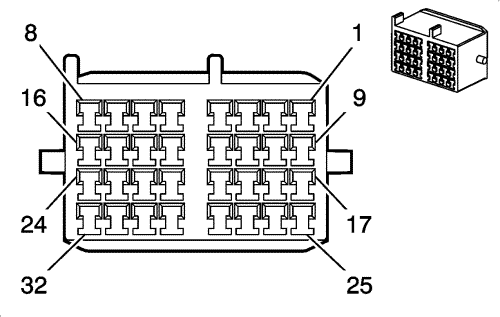
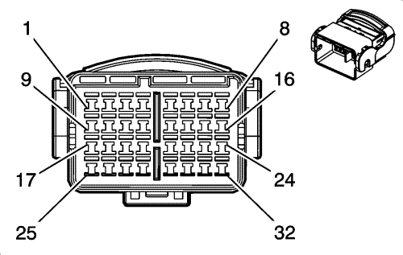

Spark |
||||||||
|
|
|
|||||||
|
 |
 |
Información sobre la pieza de conexión
| Información sobre la pieza de conexión
|
Información sobre la pieza de terminal
| Información sobre la pieza de terminal
|
Bulón | Cable | Circuito | Función | Bulón | Cable | Circuito | Función |
|---|---|---|---|---|---|---|---|
1 | 1 VT/BN | 741 | Tensión de encendido 3 (volante a la izquierda) | 1 | 1 VT/BN | 741 | Tensión de encendido 3 (volante a la izquierda) |
0,5 OG/BK | 1733 | Referencia de 12 V de la unidad de control electrónico (volante a la derecha) | 0,5 OG/BK | 1733 | Referencia de 12 V de la unidad de control electrónico (volante a la derecha) | ||
2 | 1 BN | 96 | Señal de retardo del pulso del interruptor del limpiaparabrisas (volante a la izquierda) | 2 | 1 BN | 96 | Señal de retardo del pulso del interruptor del limpiaparabrisas (volante a la izquierda) |
3 | 1 WH | 92 | Velocidad alta del motor del limpiaparabrisas (volante a la izquierda) | 3 | 1 WH | 92 | Velocidad alta del motor del limpiaparabrisas (volante a la izquierda) |
4 | 1 YE/BN | 95 | Control de velocidad baja del motor del limpiaparabrisas (volante a la izquierda) | 4 | 1 YE/BN | 95 | Control de velocidad baja del motor del limpiaparabrisas (volante a la izquierda) |
5 | 0,5 BK/BN | 654 | Referencia baja del micrófono del teléfono móvil (volanta a la izquierda) | 5 | 0,5 BK/BN | 654 | Referencia baja del micrófono del teléfono móvil (volanta a la izquierda) |
6 | 0,5 L-BU | 655 | Señal del micrófono del teléfono móvil (volante a la izquierda) | 6 | 0,5 D-BU | 655 | Señal del micrófono del teléfono móvil (volante a la izquierda) |
0,5 YE/GY | 122 | Tensión de alimentación del faro antiniebla trasero (volante a la derecha) | 0,5 YE/GY | 122 | Tensión de alimentación del faro antiniebla trasero (volante a la derecha) | ||
7 | 1 GY/VT | 267 | Tensión del elemento calefactor del retrovisor (volante a la izquierda) | 7 | 1 GY/VT | 267 | Tensión del elemento calefactor del retrovisor (volante a la izquierda) |
8 | 1,5 BK | 450 | Masa (volante a la izquierda) | 8 | 1,5 BK | 450 | Masa (volante a la izquierda) |
9 | 0,75 BN/YE | 20 | Señal del interruptor de la luz de freno | 9 | 0,75 BN/YE | 20 | Señal del interruptor de la luz de freno |
0,75 BN/YE | 20 | Señal del interruptor de la luz de freno | |||||
10 | 0,5 RD/L-BU | 840 | Voltaje positivo de batería | 10 | 0,5 RD/L-BU | 840 | Voltaje positivo de batería |
0,5 RD/L-BU | 840 | Voltaje positivo de batería | |||||
11 | 0,5 L-GN/WH | 24 | Tensión de alimentación de la lámpara de respaldo | 11 | 0,5 L-GN/WH | 744 | Tensión de alimentación de la lámpara de respaldo |
0,5 L-GN/WH | 24 | Tensión de alimentación de la lámpara de respaldo | |||||
0,5 BN/WH | 24 | Tensión de alimentación de la luz de marcha atrás (volante a la izquierda) | |||||
12 | 0,5 VT/BN | 141 | Tensión 3 de encendido, marcha | 12 | 0,5 VT/BN | 141 | Tensión 3 de encendido, marcha |
13 | 0,5 BN/L-BU | 391 | Señal del interruptor del limpiador de la ventanilla trasera | 13 | 0,5 BN/L-BU | 391 | Señal del interruptor del limpiador de la ventanilla trasera |
14 | 0,5 L-BU/YE | 744 | Señal del interruptor de compartimento trasero entreabierto (U25, AU3 ó AU4) | 14 | 0,5 L-BU/YE | 744 | Señal del interruptor de compartimento trasero entreabierto (U25, AU3 ó AU4) |
15 | 1 VT/BK | 1846 | Tensión de alimentación del arrastrador de la bobina del encendido (LCP) | 15 | 1 VT/BK | 1846 | Tensión de alimentación del arrastrador de la bobina del encendido (LCP) |
16 | 0,35 YE | 136 | Control LED de combustible del centro de información del conductor (LCP) | 16 | 0,35 YE | 136 | Control LED de combustible del centro de información del conductor (LCP) |
17 | 0,5 GY | 745 | Señal del interruptor de la puerta delantera izquierda entreabierta | 17 | 0,5 GY | 745 | Señal del interruptor de la puerta delantera izquierda entreabierta |
18 | 0,5 GY | 746 | Señal del interruptor del puerta delantera derecha entreabierta (volante a la derecha) | 18 | 0,5 GY | 746 | Señal del interruptor del puerta delantera derecha entreabierta (volante a la derecha) |
0,5 GY | 747 | Señal del interruptor de puerta trasera izquierda abierta (volante a la izquierda) | 0,5 GY | 747 | Señal del interruptor de puerta trasera izquierda abierta (volante a la izquierda) | ||
19 | 0,5 BN/YE | 294 | Control de desbloqueo del actuador de cierre de la puerta | 19 | 0,5 BN/YE | 294 | Control de desbloqueo del actuador de cierre de la puerta |
20 | 0,5 GY | 295 | Control de bloqueo del actuador de cierre de la puerta | 20 | 0,5 GY | 33 | Control del indicador de aviso de frenado |
21 | 0,5 YE/WH | 33 | Control del indicador de aviso de frenado | 21 | 0,5 YE/WH | 33 | Control del indicador de aviso de frenado |
0,5 YE/WH | 33 | Control del indicador de aviso de frenado (UD7) | 0,5 YE/WH | 33 | Control del indicador de aviso de frenado (UD7) | ||
22 | 0,5 D-BU/YE | 238 | Señal del interruptor del cinturón de seguridad del conductor | 22 | 0,5 D-BU/YE | 238 | Señal del interruptor del cinturón de seguridad del conductor |
23 | 0,5 D-GN/BK | 116 | Salida del altavoz trasero izquierdo (-) | 23 | 0,5 D-GN/BK | 116 | Salida del altavoz trasero izquierdo (-) |
24 | 0,5 L-GN | 199 | Salida del altavoz trasero izquierdo (+) | 24 | 0,5 L-GN | 199 | Salida del altavoz trasero izquierdo (+) |
25 | 0,5 WH | 46 | Salida del altavoz trasero derecho (+) (UQ4 ó UW6) | 25 | 0,5 WH | 46 | Salida del altavoz trasero derecho (+) (UQ4 ó UW6) |
26 | 0,5 D-BU/BK | 115 | Salida del altavoz trasero derecho (-) | 26 | 0,5 L-BU/BK | 115 | Salida del altavoz trasero derecho (-) |
27 | 1,5 L-GN/VT | 168 | Señal de subida trasera izquierda del interruptor maestro del elevalunas eléctrico | 27 | 1,5 L-GN/VT | 168 | Señal de subida trasera izquierda del interruptor maestro del elevalunas eléctrico |
28 | 1,5 BN/VT | 169 | Señal de bajada trasera izquierda del interruptor maestro del elevalunas eléctrico | 28 | 1,5 BN/VT | 169 | Señal de bajada trasera izquierda del interruptor maestro del elevalunas eléctrico |
29 | 1,5 D-BU/WH | 1307 | Señal de bloqueo del interruptor maestro del elevalunas eléctrico | 29 | 1,5 D-BU/WH | 1307 | Señal de bloqueo del interruptor maestro del elevalunas eléctrico |
30 | 1,5 L-GN/D-BU | 170 | Señal de subida trasera derecha del interruptor maestro del elevalunas eléctrico | 30 | 1,5 L-GN/D-BU | 168 | Señal de subida trasera izquierda del interruptor maestro del elevalunas eléctrico |
31 | 1,5 BN/D-BU | 171 | Señal de bajada trasera derecha del interruptor maestro del elevalunas eléctrico | 31 | 1,5 BN/D-BU | 171 | Señal de bajada trasera derecha del interruptor maestro del elevalunas eléctrico |
32 | 0,5 YE/WH | 33 | Control del indicador de aviso de frenado (volante a la izquierda) | 32 | 0,5 YE/WH | 33 | Control del indicador de aviso de frenado (volante a la izquierda) |
0,5 YE/WH | 33 | Control del indicador de aviso de frenado (volante a la izquierda) | |||||
1,5 BK | 850 | Masa (volante a la derecha) | 1,5 BK | 850 | Masa (volante a la derecha) |
| © Copyright Chevrolet Europe. All rights reserved |